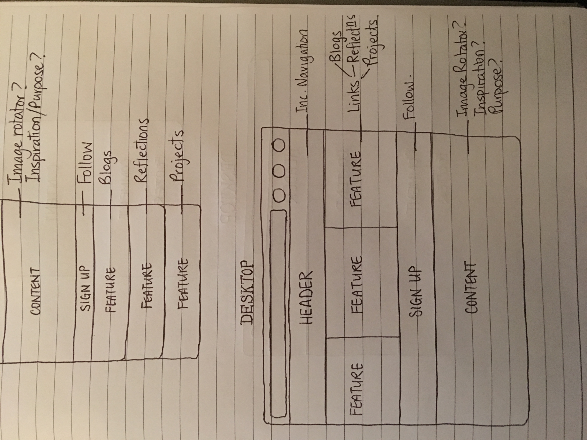

Design to Web Journey
Phase-0
In building the style and design of my new webpage I learnt about the importance of the page being responsive to any device being used.
A responsive site adapts in it's size to fit onto the screen of any device so that it is more user-friendly.
Mobile first design is beginning with the smallest screen size and device function.
Once the mobile design is created it will just need a few changes added on working towards the desktop size and functions.
A framework is a basic structure to build upon in creating a web page or application.
Pros - reusable, makes the process of building a site easier, saves time.
Cons - not too sure of any yet.
 A wireframe is a blueprint design of what you want the page to do and look like.
A wireframe is a blueprint design of what you want the page to do and look like.
 These are my wireframes for this website.
The aspect I found difficult was making the page responsive when I just wanted to have an image as the background.
I found that I didn't need a header or footer and created buttons as they were more appealing.
The next hurdle will be creating links from the buttons to the pages.